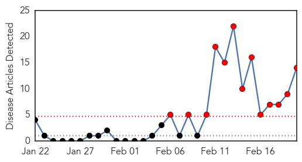
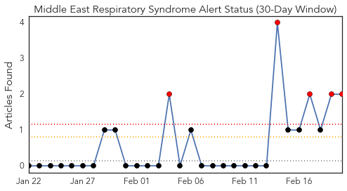
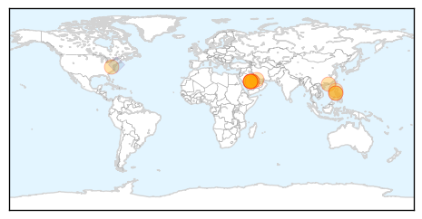
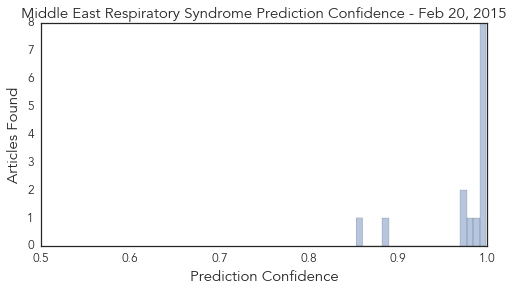

Toggle navigation
Early Warning
Daily Alerts
Middle East Respiratory Syndrome
Feb 20, 2015
Compare to:
-
Dengue Fever
Hemmorhagic Fever
Mold/Fungal Infection
Influenza
Meningitis
Pertussis / Whooping Cough
Cholera
Hepatitis
Chikungunya
Yellow Fever
Bubonic Plague
West Nile Virus
Swine Flu
Ebola
Measles
Unknown
Mumps
30 Day Trends
Web: 13
alerts
, 0
warnings
Twitter: 5
alerts
, 0
warnings
Top Articles:
0.999
News and Press Release Distribution
0.998
News Scan for Feb 20, 2015
0.997
Saudi MERS deaths surge: Health ministry
0.997
Malaysia General Business Sports and Lifestyle News
0.997
Saudi Mers deaths surge says health ministry
0.995
Middle East respiratory illness spooks Hong Kong, brings back memories of Sars
0.995
Saudi MERS deaths surge
0.992
Most MERS victims are 50 and above
0.988
MERS war stepped up as 5 lives lost in 1 day
0.984
Metro, News, The Philippine Star
0.975
PH mapping Middle East hospitals with MERS cases
0.973
Filipina nurse already clear of MERS-CoV
0.889
More coronavirus cases expected
0.853
OFWs told to remain vigilant vs MERS-COV
Top Tweets:
0.725
Cases of MERS-CoV in Saudi Arabia are Reported to WHO http://t.co/A7TASqzXGp via
0.529
AFD Blog `Saudi MOH: 1 New MERS Case, 1 Fatality' http://t.co/b6IQhtbmx2 MERS-CoV
Web/News Articles

Tweets

Article Locations

Article Confidences
